전기기사 (2015-08-16 기출문제)
1과목: 전기자기학
1. 패러데이의 법칙에 대한 설명으로 가장 적합한 것은?
- 정전유도에 의해 회로에 발생하는 기자력은 자속의 변화 방향으로 유도된다.
- 정전유도에 의해 회로에 발생되는 기자력은 자속 쇄교수의 시간에 대한 증가율에 비례한다.
- 전자유도에 의해 회로에 발생되는 기전력은 자속의 변화를 방해하는 반대방향으로 기전력이 유도된다.
- 전자유도에 의해 회로에 발생하는 기전력은 자속 쇄교수의 시간에 대한 변화율에 비례한다.
(정답률: 66%)

2. 반지름 a, b(b>a)[m]의 동심 구도체 사이에 유전율 ε[F/m]의 유전체가 채워졌을 때의 정전 용량은 몇 [F]인가?
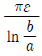
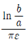
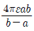
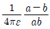
(정답률: 80%)
3. 맥스웰의 전자방정식 중 패러데이의 법칙에서 유도된 식은?(단, D : 전속밀도, Pv : 공간 전하밀도, B : 자속 밀도, E : 전계의 세기, J : 전류밀도, H : 자계의 세기)
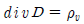
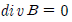
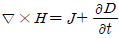
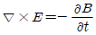
(정답률: 76%)
4. 특성 임피던스가 각각 n1, n2 인 두 매질의 경계면에 전자파가 수직으로 입사할 때 전계가 무반사로 되기 위한 가장 알맞은 조건은?
- n2=0
- n1=0
- n1=n2
- n1ㆍn2=0
(정답률: 83%)
5. 전기력선의 성질에 대한 설명 중 옳은 것은?
- 전기력선은 도체 표면과 직교한다.
- 전기력선은 전위가 낮은 점에서 높은 점으로 향한다.
- 전기력선은 도체 내부에 존재할 수 있다.
- 전기력선은 등전위면과 평행하다.
(정답률: 74%)
6. 반지름 a[m] 의 원형 단면을 가진 도선에 전도전류 ic=Icsin2πft[A]가 흐를 때 변위전류 밀도의 최대값 jd는 몇 [A/m2]가 되는가?(단, 도전율은 σ[S/m]이고, 비유전율은 εr 이다.)
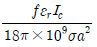
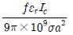
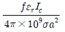
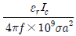
(정답률: 60%)
7. 자속밀도가 0.3[Wb/m2]인 평등자계 내에 5[A]의 전류가 흐르고 있는 길이 2[m]의 직선도체를 자계의 방향에 대하여 60°의 각도로 놓았을 때 이 도체가 받는 힘은 약 몇 [N] 인가?
- 1.3
- 2.6
- 4.7
- 5.2
(정답률: 80%)
8. 무한 평면도체로부터 거리 a[m] 인 곳에 점전하 Q[C]가 있을 때 도체 표면에 유도되는 최대전하밀도는 몇 [C/m2]인가?
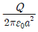
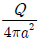
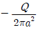
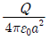
(정답률: 38%)
9. 2[C]의 점전하가 전계 E = 2ax+ay-4az[V/m] 및 자계 B=-2ax+2ay-az[Wb/m2] 내에서 v=4ax-ay-2az[m/s]의 속도로 운동하고 있을 때 점전하에 작용하는 힘 F는 몇 [N]인가?
- -14ax+18ay+6az
- 14ax-18ay-6az
- -14ax+18ay+4az
- 14ax+18ay+4az
(정답률: 46%)
10. 비투자율 350인 환상철심 중의 평균 자계의 세기가 280[AT/m]일 때, 자화의 세기는 약 몇 [Wb/m2]인가?
- 0.12
- 0.15
- 0.18
- 0.21
(정답률: 70%)
11. Q[C]의 전하를 가진 반지름 a[m]의 도체구를 유전율 ε[F/m]의 기름탱크로부터 공기중으로 빼내는데 요하는 에너지는 몇 [J]인가?
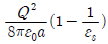
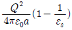
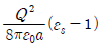
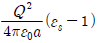
(정답률: 44%)
12. 다음 설명 중 옳은 것은?
- 자계 내의 자속밀도는 벡터포텐셜을 폐로선적분하여 구할 수 있다.
- 벡터포텐셜은 거리에 반비례하며 전류의 방향과 같다.
- 자속은 벡터포텐셜의 curl 을 취하면 구할 수 있다.
- 스칼라포텐셜은 정전계와 정자계에서 모두 정의되나 벡터포텐셜은 정전계에서만 정의된다.
(정답률: 41%)
13. 한변의 저항이 R0인 그림과 같은 무한히 긴 회로에서 AB간의 합성저항은 어떻게 되는가?
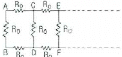
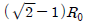
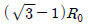
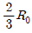
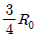
(정답률: 66%)
14. 평면 전자파가 유전율 ε, 투자율 μ인 유전체 내를 전파한다. 전계의 세기가 E=Emsinω(t-x/y)[V/m]라면 자계의 세기 h[AT/m]는?
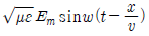
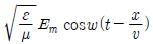
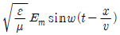
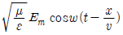
(정답률: 54%)
15. 높은 전압이나, 낙뢰를 맞는 자동차 안에는 승객이 안전한 이유가 아닌것은?
- 도전성 용기 내부의 장은 외부 전하나 자장이 정지 상태에서 영(zero)이다.
- 도전성 내부 벽에는 음(-)전하가 이동하여 외부에 같은 크기의 양(+) 전하를 준다.
- 도전성인 용기라도 속빈 경우에 그 내부에는 전기장이 존재하지 않는다.
- 표면의 도전성 코팅이나 프레임 사이에 도체의 연결이 필요없기 때문이다.
(정답률: 62%)
16. 유도기전력의 크기는 폐회로에 쇄교하는 자속의 시간적인 변화율에 비례하는 정량적인 법칙은?
- 노이만의 법칙
- 가우스의 법칙
- 암페어의 주회적분 법칙
- 플레밍의 오른손 법칙
(정답률: 58%)
17. 전계 E[V/m]가 두 유전체의 경계면에 평행으로 작용하는 경우 경계면의 단위면적당 작용하는 힘은 몇 [N/m2]인가?(단, ε1, ε2는 두 유전체의 유전율이다.)
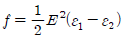
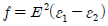
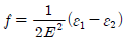
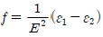
(정답률: 80%)
18. 지름 2mm, 길이 25m인 동선의 내부 인덕턴스는 몇 [μH]인가?
- 1.25
- 2.5
- 5.0
- 25
(정답률: 47%)
19. 아래의 그림과 같은 자기회로에서 A부분에만 코일을 감아서 전류를 인가할 때의 자기저항과 B부분에만 코일을 감아서 전류를 인가할 때의 자기저항 [AT/Wb]을 각각 구하면 어떻게 되는가?(단, 자기저항 R1=3[AT/Wb], R2=1, R3=2)
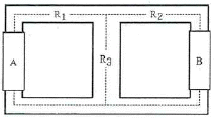
- RA=2.2, RB=3.67
- RA=3.67, RB=2.2
- RA=1.43, RB=2.83
- RA=2.2, RB=1.43
(정답률: 63%)
20. 5000[μF]의 콘덴서를 60[V]로 충전시켰을 때 콘덴서에 축적되는 에너지는 몇 [J]인가?
- 5
- 9
- 45
- 90
(정답률: 74%)
2과목: 전력공학
21. 기력발전소 내의 보조기 중 예비기를 가장 필요로 하는 것은?
- 미분탄 송입기
- 급수펌프
- 강제 통풍기
- 급탄기
(정답률: 68%)
22. 유량의 크기를 구분할 때 갈수량이란?
- 하천의 수위 중에서 1년을 통하여 355일간 이보다 내려가지 않는 수위
- 하천의 수위 중에서 1년을 통하여 275일간 이보다 내려가지 않는 수위
- 하천의 수위 중에서 1년을 통하여 185일간 이보다 내려가지 않는 수위
- 하천의 수위 중에서 1년을 통하여 95일간 이보다 내려가지 않는 수위
(정답률: 68%)
23. 송전선로에서 변압기의 유기 기전력에 의해 발생하는 고조파중 제 3고조파를 제거하기 위한 방법으로 가장 적당한 것은?
- 변압기를 Δ결선한다.
- 동기 조상기를 설치한다.
- 직렬 리액터를 설치한다.
- 전력용 콘덴서를 설치한다.
(정답률: 72%)
24. 전압 V1[k/V] 에 대한 %리액턴스 값이 Xp1이고, 전압 V2[k/V] 에 대한 %리액턴스 값이 Xp2 일 때, 이들 사이의 관계로 옳은 것은?
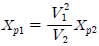
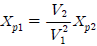
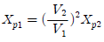
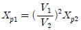
(정답률: 56%)
25. 22.9[kV-Y] 가공배전선로에서 주 공급선로의 정전사고시 예비전원 선로로 자동 전환되는 개폐장치는?
- 기중부하 개폐기
- 고장구간 자동 개폐기
- 자동선로 구분 개폐기
- 자동부하 전환 개폐기
(정답률: 60%)
26. 보호 계전기의 반한시·정한시 특성은?
- 동작전류가 커질수록 동작시간이 짧게 되는 특성
- 최소 동작전류 이상의 전류가 흐르면 즉시 동작하는 특성
- 동작전류의 크기에 관계없이 일정한 시간에 동작하는 특성
- 동작전류가 적은 동안에는 동작 전류가 커질수록 동작시간이 짧아지고, 어떤 전류 이상이 되면 동작전류의 크기에 관계 없이 일정한 시간에서 동작하는 특성
(정답률: 80%)
27. 송전계통의 안정도를 증진시키는 방법이 아닌것은?
- 속응 여자방식을 채택한다.
- 고속도 재폐로 방식을 채용한다.
- 발전기나 변압기의 리액턴스를 크게한다.
- 고장전류를 줄이고 고속도 차단방식을 채용한다.
(정답률: 79%)
28. 송전계통의 중성점을 직접 접지할 경우 관계가 없는 것은?
- 과도 안정도 증진
- 계전기 동작 확실
- 기기의 절연수준 저감
- 단절연 변압기 사용 가능
(정답률: 51%)
29. 송전선로의 수전단을 단락할 경우 송전단에서 본 임피던스가 300Ω이고 수전단을 개방한 경우에는 900Ω일 때, 이 선로의 특성임피던스 Z0[Ω] 는 약 얼마인가?
- 490
- 500
- 510
- 520
(정답률: 62%)
30. 제 5고조파 전류의 억제를 위해 전력용 콘덴서에 직렬로 삽입하는 유도 리액턴스의 값으로 적당한 것은?
- 전력용 콘덴서 용량의 약 6%정도
- 전력용 콘덴서 용량의 약 12%정도
- 전력용 콘덴서 용량의 약 18%정도
- 전력용 콘덴서 용량의 약 24%정도
(정답률: 63%)
31. 각 수용가의 수용률 및 수용가 사이의 부등률이 변화할 때 수용가군 총합의 부하율에 대한 설명으로 옳은 것은?
- 수용률에 비례하고 부등률에 반비례한다.
- 부등률에 비례하고 수용률에 반비례한다.
- 부등률과 수용률에 모두 반비례한다.
- 부등률과 수용률에 모두 비례한다.
(정답률: 60%)
32. 송전단 전압이 3.4kV, 수전단 전압이 3kV인 배전선로에서 수전단의 부하를 끊은 경우의 수전단 전압이 3.2kV로 되었다면 이때의 전압 변동률은 약 몇 %인가?
- 5.88
- 6.25
- 6.67
- 11.76
(정답률: 56%)
33. 전력계통에서 무효전력을 조정하는 조상설비 중 전력용 콘덴서를 동기 조상기와 비교할 때 옳은 것은?
- 전력손실이 크다.
- 지상 무효전력분을 공급할 수 있다.
- 전압 조정을 계단적으로 밖에 못한다.
- 송전선로를 시송전할 때 선로를 충전할 수 있다.
(정답률: 63%)
34. 송전선로의 코로나 방지에 가장 효과적인 방법은?
- 전선의 높이를 가급적 낮게 한다.
- 코로나 임계전압을 낮게 한다.
- 선로의 절연을 강화한다.
- 복도체를 사용한다.
(정답률: 78%)
35. 일반적으로 화력발전소에서 적용하고 있는 열사이클 중 가장 열효율이 좋은 것은?
- 재생 사이클
- 랭킨 사이클
- 재열 사이클
- 재생재열 사이클
(정답률: 69%)
36. 한류 리액터를 사용하는 가장 큰 목적은?
- 충전 전류의 제한
- 접지 전류의 제한
- 누설 전류의 제한
- 단락 전류의 제한
(정답률: 76%)
37. 송전 계통의 절연협조에 있어서 절연 레벨을 가장 낮게 잡고 있는 기기는?
- 차단기
- 피뢰기
- 단로기
- 변압기
(정답률: 74%)
38. 송전계통에서 절연협조의 기본이 되는것은?
- 애자의 섬락전압
- 권선의 절연내력
- 피뢰기의 제한전압
- 변압기 부싱의 섬락전압
(정답률: 67%)
39. 154[kV] 송전선로에서 송전거리가 154[km]라 할때 송전용량 계수법에 의한 송전용량은 몇 [kW]인가? (단, 송전용량 계수는 1200으로 한다.)
- 61600
- 92400
- 123200
- 184800
(정답률: 60%)
40. 22.9[kV], Y결선된 자가용 수전설비의 계기용 변압기의 2차측 정격전압은 몇 V인가?
- 110
- 190
- 110√3
- 190√3
(정답률: 67%)
3과목: 전기기기
41. 단상 변압기의 1차 전압 E1 , 1차 저항 r1 , 2차 저항 r2 , 1차 누설리액턴스 x1 , 2차 누설리액턴스 x2 , 권수비 a라 하면 2차 권선을 단락했을 때의 1차 단락 전류는?
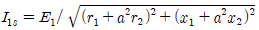
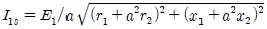
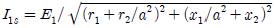
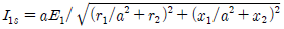
(정답률: 53%)
42. 그림과 같이 180° 도통형 인버터의 상태일 때 u상과 v상의 상전압 및 u-v 선간전압은?
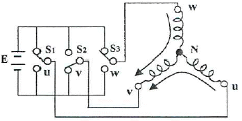
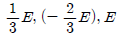
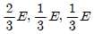
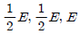
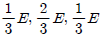
(정답률: 52%)
43. 그림은 동기 발전기의 구동 개념도이다. 그림에서 2를 발전기라 할때 3의 명칭으로 적합한 것은?
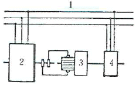
- 전동기
- 여자기
- 원동기
- 제동기
(정답률: 72%)
44. 극수 6, 회전수 1200rpm의 교류 발전기와 병렬운전하는 극수 8의 교류 발전기의 회전수[rpm]은?
- 600
- 750
- 900
- 1200
(정답률: 74%)
45. 3상 동기 발전기에서 그림과 같이 1상의 권선을 서로 똑같은 2조로 나누어서 그 1조의 권선전압을 E[V], 각 권선의 전류를 I[A]라 하고 지그재그 Y형[zigzag star]으로 결선하는 경우 선간전압, 선전류 및 피상 전력은?
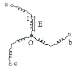
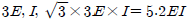
(정답률: 53%)
46. 동기 발전기에서 동기속도와 극수와의 관계를 표시한 것은?(단, N : 동기속도, P : 극수이다.)
(정답률: 76%)
47. 4극, 60Hz의 회전 변류기가 있는데 회전 전기자형이다. 이 회전 변류기의 회전 방향과 회전 속도는 다음 중 어느 것인가?
- 회전자계의 방향으로 1800rpm 속도로 회전한다.
- 회전자계의 방향으로 1800rpm 이하의 속도로 회전한다.
- 회전자계의 반대 방향으로 1800rpm 속도로 회전한다.
- 회전자계의 반대 방향으로 1800rpm 이상의 속도로 회전한다.
(정답률: 43%)
48. 변압기 단락시험에서 변압기의 임피던스 전압이란?
- 여자 전류가 흐를 때의 2차측 단자전압
- 정격 전류가 흐르때의 2차측 단자전압
- 2차 단락 전류가 흐를 때의 변압기 내의 전압 강하
- 정격 전류가 흐를 때의 변압기 내의 전압 강하
(정답률: 50%)
49. 정격전압 100V, 정격전류 50A인 분권 발전기의 유기기전력은 몇 V인가? (단, 전기자 저항 0.2Ω, 계자전류 및 전기자 반작용은 무시한다.)
- 110
- 120
- 125
- 127.5
(정답률: 73%)
50. 권선형 유도전동기 2대를 직렬종속으로 운전하는 경우 그 동기속도는 어떤 전동기의 속도와 같은가?
- 두 전동기 중 적은 극수를 갖는 전동기
- 두 전동기 중 많은 극수를 갖는 전동기
- 두 전동기의 극수의 합과 같은 극수를 갖는 전동기
- 두 전동기의 극수의 차와 같은 극수를 갖는 전동기
(정답률: 70%)
51. 사이리스터를 이용한 교류전압 크기 제어방식은?
- 정지 레오나드 방식
- 초퍼 방식
- 위상제어 방식
- TRC 방식
(정답률: 61%)
52. 전체 도체수는 100, 단중 중권이며 자극수는 4, 자속수는 극당 0.628Wb인 직류 분권 전동기가 있다. 이 전동기의 부하시 전기자에 5A가 흐르고 있었다면 이때의 토크[N·m]는?
- 12.5
- 25
- 50
- 100
(정답률: 54%)
53. 변압기에서 콘서베이터의 용도는?
- 통풍 장치
- 변압유의 열화방지
- 강제 순환
- 코로나 방지
(정답률: 72%)
54. 3상 농형 유도전동기의 기동방법으로 틀린 것은?
- Y-Δ기동
- 2차 저항에 의한 기동
- 전전압 기동
- 리액터 기동
(정답률: 73%)
55. 스테핑 모터에 대한 설명 중 틀린 것은?
- 회전속도는 스테핑 주파수에 반비례한다.
- 총 회전각도는 스텝각과 스텝수의 곱이다.
- 분해능은 스텝각에 반비례한다.
- 펄스구동 방식의 전동기이다.
(정답률: 56%)
56. 전기철도에 가장 적합한 직류 전동기는?
- 분권 전동기
- 직권 전동기
- 복권 전동기
- 자여자 분권 전동기
(정답률: 68%)
57. 3상 전원을 이용하여 2상 전압을 얻고자 할 때 사용하는 결선 방법은?(오류 신고가 접수된 문제입니다. 반드시 정답과 해설을 확인하시기 바랍니다.)
- Scott 결선
- Fork 결선
- 환상 결선
- 2중 3각 결선
(정답률: 67%)
58. 직류 분권 발전기를 서서히 단락상태로 하면 어떤 상태로 되는가?
- 과전류로 소손된다.
- 과전압이 된다.
- 소전류가 흐른다.
- 운전이 정지된다.
(정답률: 51%)
59. 권선형 유도전동기와 직류 분권전동기와의 유사한 점으로 가장 옳은 것은?
- 정류자가 있고, 저항으로 속도조정을 할 수 있다.
- 속도 변동률이 크고, 토크가 전류에 비례한다.
- 속도 가변이 용이하며, 기동토크가 기동 전류에 비례한다.
- 속도 변동률이 적고, 저항으로 속도 조정을 할 수 있다.
(정답률: 53%)
60. 동기 발전기에서 전기자 권선과 계자 권선이 모두 고정되고 유도자가 회전하는 것은?
- 수차 발전기
- 고주파 발전기
- 터빈 발전기
- 엔진 발전기
(정답률: 62%)
4과목: 회로이론 및 제어공학
61. 전달함수의 크기가 주파수 0에서 최대값을 갖는 저역통과 필터가 있다. 최대값의 70.7% 또는 -3dB로 되는 크기까지의 주파수로 정의되는 것은?
- 공진 주파수
- 첨두 공진점
- 대역폭
- 분리도
(정답률: 61%)
62. 어떤 제어계의 전달함수 에서 안정성을 판정하면?
- 임계상태
- 불안정
- 안정
- 알수 없다.
(정답률: 69%)
63. 그림과 같은 신호흐름선도에서 C(s)/R(s)의 값은?
- -(24/159)
- -(12/79)
- 24/65
- 24/159
(정답률: 65%)
64. G(s) = K/s 인 적분요소의 보드선도에서 이득곡선의 1decade당 기울기는 몇 dB인가?
- 10
- 20
- -10
- -20
(정답률: 59%)
65. 자동제어계에서 과도응답 중 최종값의 10%에서 90%에 도달하는데 걸리는 시간은?
- 정정시간
- 지연시간
- 상승시간
- 응답시간
(정답률: 73%)
66. 연산증폭기의 성질에 관한 설명으로 틀린 것은?
- 전압 이득이 매우 크다.
- 입력 임피던스가 매우 작다.
- 전력 이득이 매우 크다.
- 출력 임피던스가 매우 작다.
(정답률: 50%)
67. 다음 중 온도를 전압으로 변환시키는 요소는?
- 차동 변압기
- 열전대
- 측온저항
- 광전지
(정답률: 73%)
68. 다음 블록선도의 전달함수는?
(정답률: 71%)
69. e(t)의 z변환을 E(z)라 했을 때 e(t)의 초기값은?
(정답률: 48%)
70. 특성 방정식이s4+s3+2s2+3s+2=0인 경우 불안정한 근의 수는?
- 0개
- 1개
- 2개
- 3개
(정답률: 72%)
71. 3상 불평형 전압을 Va, Vb, Vc 라고 할 때 역상전압 V2는?
(정답률: 62%)
72. 단위 길이당 인덕턴스 및 커패시턴스가 각각 L및 C일 때 전송선로의 특성임피던스는?(단, 무손실 선로임)
- L/C
- C/L
(정답률: 76%)
73. 그림과 같은 회로에 주파수 60Hz, 교류전압 200V의 전원이 인가되었다. R의 전력손실을 L=0인 때의 1/2로 하면, L의 크기는 약 몇 H인가? (단, R=600Ω이다.)
- 0.59
- 1.59
- 3.62
- 4.62
(정답률: 47%)
74. 다음 함수의 라플라스 역변환은?
- e-t-e-2t
- et-e-2t
- e-t+e-2t
- et+e-2t
(정답률: 62%)
75. 평형 3상 회로에서 그림과 같이 변류기를 접속하고 전류계를 연결하였을 때, A2에 흐르는 전류 [A]는?
- 5√3
- 5√2
- 5
- 0
(정답률: 57%)
76. 그림과 같은 전기회로의 전달함수는? (단, ei(t)는 입력전압, e0(t)는 출력전압이다.)
(정답률: 63%)
77. v=3+5√2sinωt + 10√2sin(3ωt-π/3)[V] 의 실효값 [V]은?
- 9.6
- 10.6
- 11.6
- 12.6
(정답률: 71%)
78. RL 직렬회로에서 R=20Ω, L=40mH이다. 이 회로의 시정수[sec]는?
- 2
- 2×10-3
- 1/2
- 1/2×10-3
(정답률: 73%)
79. 0.1[μF]의 콘덴서에 주파수 1[kHz], 최대전압 2000[V]를 인가할 때 전류의 순시값[A]은?
- 4.446 sin(ωt+90°)
- 4.446 cos(ωt-90°)
- 1.256 sin(ωt+90°)
- 1.256 cos(ωt-90°)
(정답률: 55%)
80. 그림과 같은 직류회로에서 저항 R[Ω]의 값은?
- 10
- 20
- 30
- 40
(정답률: 47%)
5과목: 전기설비기술기준 및 판단기준
81. 시가지에 시설하는 특고압 가공전선로용 지지물로 사용될 수 없는 것은? (단, 사용전압이 170kV 이하의 전선로인 경우이다.)
- 철근 콘크리트주
- 목주
- 철탑
- 철주
(정답률: 67%)
82. 고압 및 특고압 전로의 절연내력 시험을 하는 경우 시험 전압을 연속해서 몇 분간 가하여 견디어야 하는가?
- 1
- 3
- 5
- 10
(정답률: 71%)
83. 의료장소에서 전기설비 시설로 적합하지 않는 것은?
- 그룹 0 장소는 TN 또는 TT 접지 계통 적용
- 의료 IT 계통의 분전반은 의료장소의 내부 혹은 가까운 외부에 설치
- 그룹 1 또는 그룹 2 의료장소의 수술등, 내시경 조명등은 정전시 0.5초 이내 비상전원 공급
- 의료 IT 계통의 누설전류 계측시 10mA에 도달하면 표시 및 경보 하도록 시설
(정답률: 48%)
84. 전력용 콘덴서 또는 분로 리액터의 내부에 고장 또는 과전류 및 과전압이 생긴 경우에 자동적으로 동작하여 전로로부터 자동차단하는 장치를 시설해야 하는 뱅크 용량은?
- 500kVA를 넘고 7500kVA 미만
- 7500kVA를 넘고 10000kVA 미만
- 10000kVA를 넘고 15000kVA 미만
- 15000kVA 이상
(정답률: 47%)
85. 가공전선로의 지지물로 볼 수 없는 것은?
- 철주
- 지선
- 철탑
- 철근 콘크리트주
(정답률: 64%)
86. 전로와 대지 간 절연내력시험을 하고자 할 때 전로의 종류와 그에 따른 시험전압의 내용으로 옳은 것은?
- 7000V 이하 - 2배
- 60000V 초과 중성점 비접지 - 1.5배
- 60000V 초과 중성점 접지 - 1.1배
- 170000V 초과 중성점 직접접지 - 0.72배
(정답률: 49%)
87. 특고압을 직접 저압으로 변성하는 변압기를 시설하여서는 안되는 것은?
- 교류식 전기철도용 신호회로에 전기를 공급하기 위한 변압기
- 1차 전압이 22.9kV이고, 1차측과 2차측 권선이 혼촉한 경우에 자동적으로 전로로부터 차단되는 차단기가 설치된 변압기
- 1차 전압 66kV의 변압기로서 1차측과 2차측 권선 사이에 제 2종 접지공사를 한 금속제 혼촉방지판이 있는 변압기
- 1차 전압이 22kV이고 Δ 결선된 비접지 변압기로서 2차측 부하설비가 항상 일정하게 유지되는 변압기
(정답률: 39%)
88. 고압 이상의 전압 조정기 내장권선을 이상전압으로부터 보호하기 위하여 특히 필요한 경우에는 그 권선에 제 몇 종 접지 공사를 하여야 하는가?(오류 신고가 접수된 문제입니다. 반드시 정답과 해설을 확인하시기 바랍니다.)
- 제 1종 접지공사
- 제 2종 접지공사
- 제 3종 접지공사
- 특별 제 3종 접지 공사
(정답률: 29%)
89. 제 1종 특고압 보안공사로 시설하는 전선로의 지지물로 사용할 수 없는 것은?(오류 신고가 접수된 문제입니다. 반드시 정답과 해설을 확인하시기 바랍니다.)
- 철탑
- B종 철주
- B종 철근 콘크리트주
- 목주
(정답률: 65%)
90. 가공전선로의 지지물에 시설하는 지선으로 연선을 사용할 경우, 소선은 몇 가닥 이상이어야 하는가?
- 2
- 3
- 5
- 9
(정답률: 74%)
91. 교류 전기철도에서는 단상 부하를 사용하기 때문에 전압 불평형이 발생하기 쉽다. 이때 전압 불평형으로 인하여 전력 기계 기구에 장해가 발생하게 되는데 다음중 장해가 발생하지 않는 기기는?
- 발전기
- 조상설비
- 변압기
- 계기용 변성기
(정답률: 36%)
92. 가로등, 경기장, 공장 등의 일반조명을 위하여 시설하는 고압 방전등의 효율은 몇 lm/W 이상인가?
- 10
- 30
- 50
- 70
(정답률: 54%)
93. 단상 2선식 220V로 공급하는 간선의 굵기를 결정할 때 근거가 되는 전류의 최소값은 몇 A인가? (단, 수용률 100%, 전등 부하의 합계 5A, 한 대의 정격전류 10A인 전열기 2대, 정격전류 40A인 전동기 1대이다.)
- 55
- 65
- 75
- 130
(정답률: 39%)
94. 철재 물탱크에 전기부식방지 시설을 하였다. 수중에 시설하는 양극과 그 주위 1m 안에 있는 점과의 전위차는 몇 V 미만이며, 사용전압은 직류 몇 V 이하이어야 하는가?
- 전위차 : 5, 전압 : 30
- 전위차 : 10, 전압 : 60
- 전위차 : 15, 전압 : 90
- 전위차 : 20, 전압 : 120
(정답률: 57%)
95. 저·고압 가공전선과 가공약전류 전선 등을 동일 지지물에 시설하는 경우로 틀린 것은?
- 가공전선을 가공약전류 전선 등의 위로하고 별개의 완금류에 시설할 것
- 전선로의 지지물로 사용하는 목주의 풍압하중에 대한 안전율은 1.5 이상일 것
- 가공전선과 가공약전류 전선 등 사이의 이격거리는 저압과 고압 모두 75cm 이상일 것
- 가공전선이 가공약전류 전선에 대하여 유도작용에 의한 통신상의 장해를 줄 우려가 있는 경우에는 가공전선을 적당한 거리에서 연가할 것
(정답률: 59%)
96. 가공전선로의 지지물에 시설하는 통신선 또는 이에 직접 접속하는 가공 통신선의 높이에 대한 설명으로 적합한 것은?
- 도로를 횡단하는 경우에는 지표상 5m 이상
- 철도 또는 궤도를 횡단하는 경우에는 레일면상 6.5m 이상
- 횡단보도교 위에 시설하는 경우에는 그 노면상 3.5m 이상
- 도로를 횡단하며 교통에 지장이 없는 경우에는 4.5m 이상
(정답률: 65%)
97. 동일 지지물에 저압 가공전선(다중접지된 중성선은 제외)과 고압 가공전선을 시설하는 경우 저압 가공전선은?
- 고압 가공전선의 위로 시설하고 동일 완금류에 시설
- 고압 가공전선과 나란하게 하고 동일 완금류에 시설
- 고압 가공전선의 아래로 하고 별개의 완금류에 시설
- 고압 가공전선과 나란하게 하고 별개의 완금류에 시설
(정답률: 65%)
98. 지중 전선로를 직접 매설식에 의하여 차량 기타 중량물의 압력을 받을 우려가 있는 장소에 시설하는 경우 그 깊이는 몇 m 이상인가?(관련 규정 개정전 문제로 여기서는 기존 정답인 2번을 누르면 정답 처리됩니다. 자세한 내용은 해설을 참고하세요.)
- 1
- 1.2
- 1.5
- 2
(정답률: 66%)
99. 440V를 사용하는 전로의 절연저항은 몇 MΩ 이상인가?(오류 신고가 접수된 문제입니다. 반드시 정답과 해설을 확인하시기 바랍니다.)
- 0.1
- 0.2
- 0.3
- 0.4
(정답률: 43%)
100. 옥내에 시설하는 전동기에 과부하 보호장치의 시설을 생략할 수 없는 경우는?
- 정격 출력이 0.75kW인 전동기
- 타인이 출입할 수 없고 전동기가 소손할 정도의 과전류가 생길 우려가 없는 경우
- 전동기가 단상의 것으로 전원측 전로에 시설하는 배선용 차단기의 정격전류가 20A 이하인 경우
- 전동기를 운전 중 상시 취급자가 감시 할 수 있는 위치에 시설한 경우
(정답률: 58%)